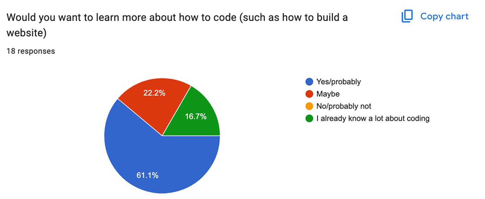
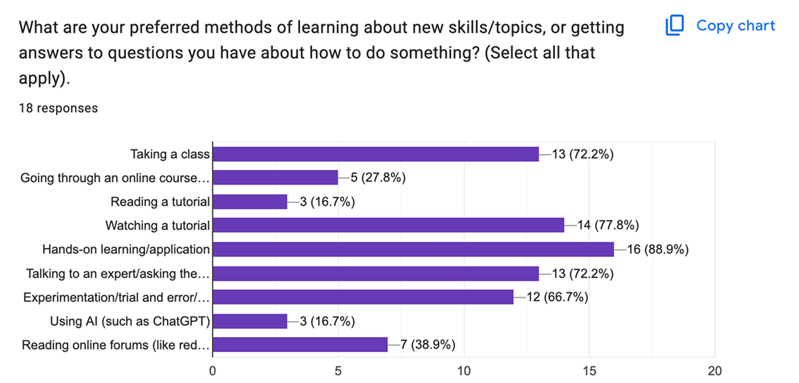
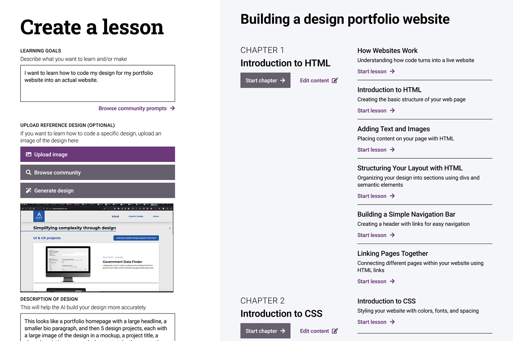

Helping designers learn web development
Web development can be one of the highest value skills that a designer can learn, and many web development concepts translate very closely to design. So designers should be well-positioned to learn this skill, but I noticed that many of my designer friends still feel like they are not technical enough to learn it.
Skip to final designsResearch
Getting feedback from designers who do and don’t know how to code
I knew that I couldn’t just rely on an assumption (that many designers are hesitant to learn web development) without any specific evidence. So first, I condensed my assumptions into 3 guiding questions:
Question 1
What are the biggest barriers preventing designers from learning about web development?
Question 2
How can web development skills benefit a designer?
Question 3
What are the best ways that a designer can learn web development?
Survey says
Many designers are hesitant to learn coding, but yet are still interested in learning in a hands-on, accessible way.
I conducted a survey of design students from different disciplines to see what their knowledge and opinions of web development are.
Why are designers hesitant to learn web development?
“The math and all the numbers. My art focused brain gets overwhelmed when I see it.”
— A designer I surveyed
Despite their hesitation, many designers are interested in learning to code

Designers surveyed like hands-on learning

What do designers who already know coding have to say?
To get a more complete view of the blockers, benefits, and methods of learning to code as a designer, I talked to designers who already know about web development.
Designers are uniquely positioned to learn web development
Many web development concepts translate directly to design concepts.
Knowing the basics of web development opens new doors
Even just knowing the basics about web development increases the range of how a designer can add value.
Experimenting and playing are great ways to learn web development
In addition to reading/watching tutorials, playing around and making mistakes is invaluable.
Initial concepts
What if a designer could generate a custom, hands-on web development course using AI?
Given that my research showed that designers like hands-on learning, I wanted to explore ways to use that to make the process of learning web development less intimidating.
Rejected concept
AI-generated, hands-on coding lessons
A designer could describe or upload a website design (such as a design of their portfolio, a past project, or something completely new) to get a full course teaching them how to code it.
Why didn’t I go with this concept?
While a simple chatbot would easily be doable, having AI create an entire interactive course module would likely have problems with feasibility, accuracy, relevancy, and quality.
What it taught me
Thinking through this concept showed me that a more structured, pre-defined course might work better than relying on AI to generate high-quality courses for any possible scenario.

Looking back to my research
After shelving my initial concept, I went to take another look at my user research and noticed an interesting theme among some of the free-response answers from my survey.
User research
How would knowing coding benefit you as a designer?
Note: I made this a conditional question, meaning it was shown only if the respondent answered “Yes” or “Maybe” to the previous question on if they wanted to learn coding. I did this to keep the survey length down and to avoid asking a leading question.
One designer said…
“It would be cost effective not having to outsource for someone to create a website for me. Website creation programs don’t grant the full range of personalization I desire.”
Another designer said…
“I want to learn to be able to do custom coding for my website and future UI/UX projects.”
And another designer said…
“I want to learn how to do simple coding so I could add more animation to a website.”
Developing a more focused solution
Many of my designer friends struggled with the lack of customization features when using a website builder to make their portfolio — a sentiment revealed in my survey. This gave me an idea:
What if designers could learn web development through the process of building their own portfolio website?
How does this solve the original problem?
My new idea — a pre-made course taking a designer through the process of building their own custom portfolio website — could lower the barriers that designers face in learning web development:
It’s relevant to designers and hands-on
Given the challenge many designers face in creating a custom portfolio website that isn’t super expensive, learning how to code your own portfolio site solves that problem while also teaching coding itself.
It’s feasible and focused in scope
It would be easier to ensure quality and accurate content in a pre-made course compared to my earlier AI-centric idea.
It serves a gap in the market
While there are many coding courses online, none are tailored towards designers. Also, existing courses often have pre-made designs to build, rather than letting the learner bring their own design.
Iterating, prototyping, and testing
A layout meant for designers
Websites that teach web development often use a three column layout to show the instructions, the code editor, and a mini browser. The problem with this is that it forces the browser to be almost the size of a phone screen unless manually resized — something not ideal for designers creating desktop web experiences while they are learning.
Early iteration
Optimizing space and reducing clicks
To give the user more space to view their design, I wanted to have a button that a user could click to toggle between the code editor and the design output.
Why didn’t I go with this version?
While it was an interesting interaction, designers I tested this with said that it was more confusing than helpful, and that they want to see and have access to both panels at the same time.
Final version
Balancing access and screen real estate
Based on user feedback, I redesigned this component so that both panels were visible at the same time, with the option to make a panel wider by just clicking a button.
Final designs


Lessons learned
Not getting too attached to an idea
While it can be to move on from an initial idea when confronted with evidence that indicates it isn’t the best solution, I practiced ways to continue ideating.
Understanding that I am not the user
While this project was inspired by my passion for design and code, I made sure that I didn’t let my own experience take precedence over the experience of designers who don’t know how to code — who were the users I was designing for!